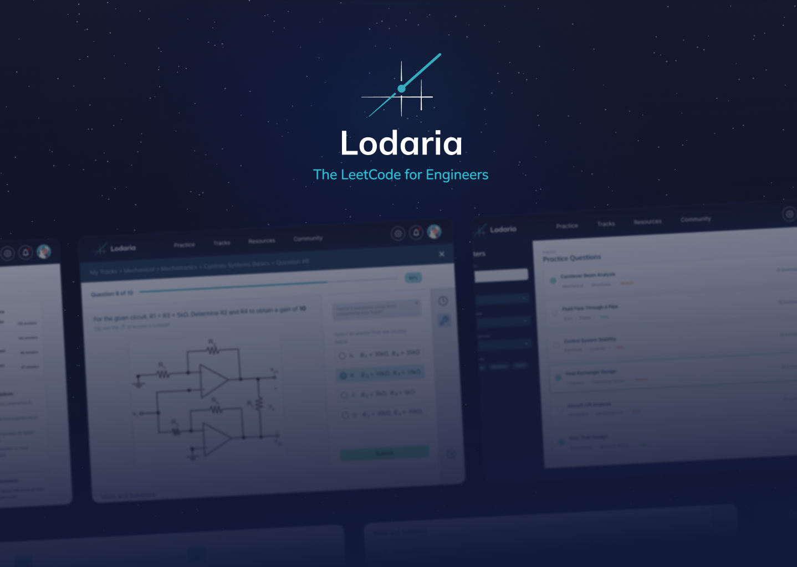
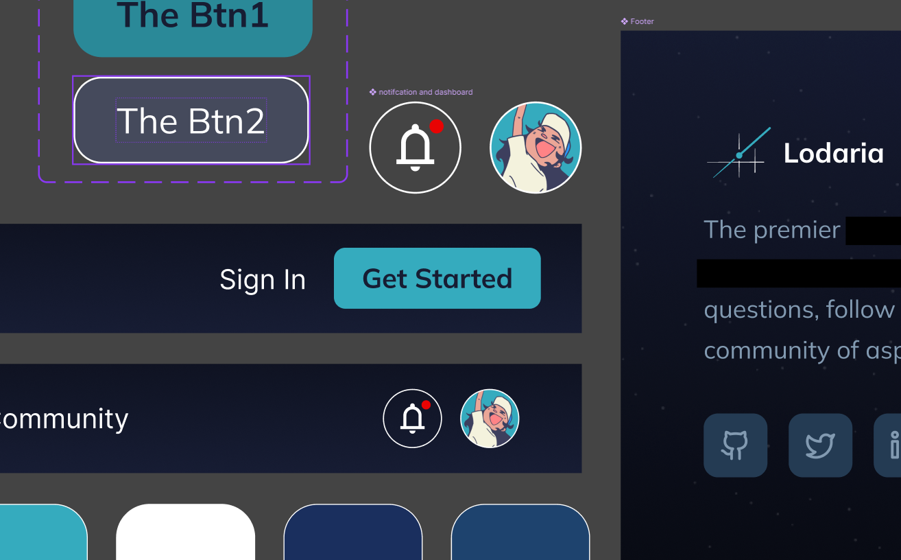

Lodaria (Work in Progress)
Lodaria is an early-stage product currently in design and development. Details are intentionally limited while the work is ongoing.
- Role
- Core contributor and Lead UX/Brand Designer
- Status
- Early-stage — discovery and design in progress
- Partners
- Grant-supported, led by a Harvard Research Fellowship alumnus, developed with UofT CS partners

Highlights
- Grant-supported
- Led by a Harvard Research Fellowship alumnus
- Developed with UofT CS partners
My Role
I am a core contributor and Lead UX/Brand Designer on Lodaria. I lead early-stage product discovery and define the UX systems, product direction, and brand foundation that guide development. My responsibilities include:
- Designing the brand identity, tone, and early design system
- Framing the problem space and product strategy
- Conducting first-hand and second-hand user research with engineering students
- Translating research into systems, flows, and experience strategy
- Collaborating with engineering partners to align UX, brand, and technical decisions
- Planning and leading usability testing and validation

Our Design Focus (WIP)
- Information architecture for discipline-specific technical content
- Question structures and evaluation logic
- Prep flows and progression systems
- Brand and interaction principles for trust and rigor